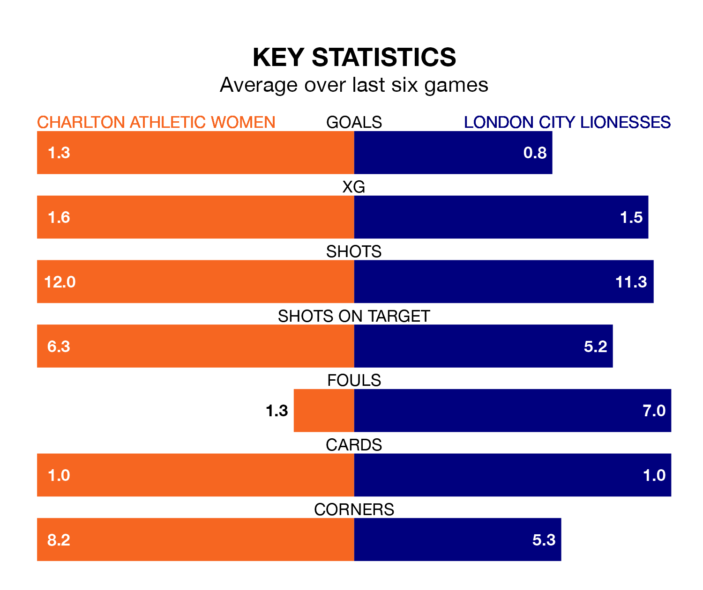

Charlton Athletic Women host London City Lionesses in Sunday's early match at the Oakwood looking to bounce back from defeat last time out in the FA Women's Championship.
Charlton Athletic, who sit fourth in the league after 17 games, fell to a 0-1 away defeat to Durham Women on March 17.
They face a London City side who picked up a win in their last match, a 1-0 victory against Sunderland Women, and who sit ninth in the table.
In the last 10 years, Charlton Athletic and London City have played each other on 12 occasions. Charlton Athletic won six of them, London City five, and they drew once.
On average, Charlton Athletic scored 1.9 goals and the Lionesses 1.0 in those matches.
Their last meeting was on October 1, when Charlton Athletic won 2-0 away.
With 19 goals in 18 games so far this season, London City are scoring at below the league average rate with 1.1 goals per game. And they are conceding more than average, letting in 28 goals at a rate of 1.6 per game.
Charlton Athletic, meanwhile, are above average scorers, with 1.4 goals per game, compared to a league average of 1.3. They have conceded 0.8 goals per game.
In Kayleigh Green, the hosts have one of the league's most on-form strikers so far this season. She has notched six goals in 16 appearances, to sit seventh in the scoring charts.
Her goal rate of one every 203 minutes is quicker than that of Chantelle Boye-Hlorkah, the Lionesses's top scorer with a goal every 248 minutes, and a total of four goals in 14 games.
Charlton Athletic are in reasonable form in the FA Women's Championship, with three wins and two draws from their last six games.
With two wins and a draw over that period, the away team's form is worse – they have taken seven points from 18, compared to Charlton Athletic's 11.
Updated: 10:19 (UTC), 22/03/24